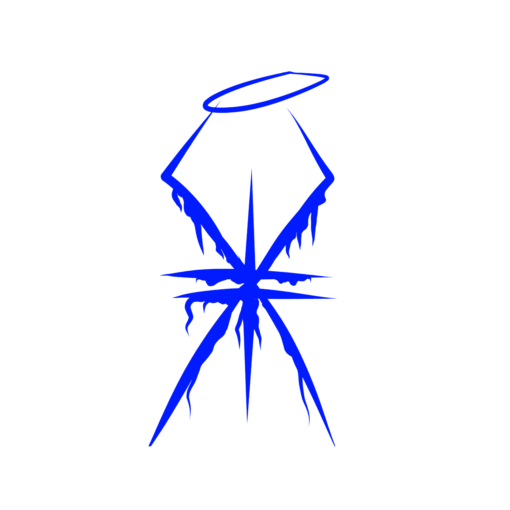

Fa'izal Yoga Aryansyah
Design Grafis
ABOUT
Desain grafis adalah seni dan praktik menciptakan visual yang mengkomunikasikan pesan atau ide tertentu kepada audiens melalui penggunaan elemen visual seperti gambar, teks, warna, dan bentuk. Dalam dunia yang penuh informasi, desain grafis memainkan peran penting untuk menarik perhatian, menginformasikan, dan memengaruhi persepsi orang. Pekerjaan desain grafis mencakup berbagai media, dari cetak seperti poster, majalah, dan kemasan produk, hingga media digital seperti situs web, aplikasi, dan media sosial.
Desainer grafis memadukan kreativitas dengan prinsip-prinsip desain yang efektif untuk menghasilkan karya yang tidak hanya menarik secara estetika tetapi juga mudah dipahami dan relevan dengan kebutuhan target audiens. Proses desain grafis melibatkan berbagai tahap, termasuk penelitian, perencanaan, sketsa, hingga penyempurnaan menggunakan perangkat lunak khusus seperti Adobe Photoshop, Illustrator, atau InDesign.
Dengan adanya desain grafis yang baik, pesan dapat disampaikan dengan jelas, merek dapat diperkuat, dan produk atau layanan dapat tampil lebih menarik, membantu menciptakan koneksi visual yang mendalam antara brand dan audiens.